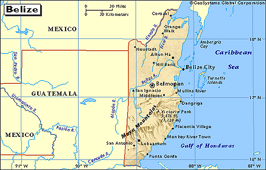

[This page is a mirror of
this original]

Beware Belize!
The Breeze
I haven't been to Belize for quite some time, not since it was called British Honduras. Many Mexicans like to go shopping there because of things they can buy there duty-free--I remember the giant tins of Danish butter cookies a friend used to bring back... It's an independent nation now, but still a member of the British Commonwealth. That's good and bad. Since Belize has been marketing itself as an offshore business haven, it's worth taking a look at; is it a good destination for PTs, or the last stop before a quick flight in hand-cuffs to Miami?
First, let's look at some of the good things Belize has going for it:
- Low population density: only 200,000 people in an area about 70 miles by 180 miles.
- Caribbean beauty: the second largest coral reef in the world, tropical rainforest, sparkling beaches by crystal clear water, and mountains to climb and get up out of the heat. Water temps vary between 79 and 83 degrees F.
- Weather resistant: in spite of the fact that Belize was just pounded by Hurricane Keith, it's worth noting that there are mountains nearly 3,000 ft. high that can't be too far from any given place in the tiny country, so you never have to far to go (especially if you live somewhere higher up) to get out of trouble.
- Tax haven: Don Lobo Tiggre has his suspicions, but for folks who aren't outlaws like him, Belize has some strong financial privacy laws and a government that's receptive to ex-pats and people who want to do business outside of the United States. (For info on Belizan IBCs, e-mail: offshore@belize.com .)
- Easy citizenship: for fifty thousand bucks you can buy full citizenship in Belize for yourself and your whole family, passports and all. (E-mail: passport@belize.com)
- English speaking: Spanish is common in the northern and western parts of Belize, but so is English, the country's official language (it's a former British colony, after all). You can brush up on your Maya too!
- Relatively easy access: you do need a passport to travel to Belize, but if you're from the US or Europe, you don't need a visa (as of this writing--it's always wise to check before going). There's a $0.75 "security fee" if you fly in (whatever that means) and an $11.25 USD exit tax.
- Relatively low cost of living: some of the ritzier hotels are more pricey than those of surrounding areas, but mostly things are pretty inexpensive, esp. compared to the US. US dollars are pretty much accepted everywhere.
- Compatibility: Belize uses the same electrical standards as the US (110v AC) and you can usually drink the water.
Now some of the negatives:
- US-Anglo relations: Belize is a British Commonwealth nation, and rumored to be even more cooperative with US law enforcement agencies than most. Belizan officials will not lift a finger to protect you from US officials enforcing American laws on Belizan soil (even for offenses that are not illegal in Belize).
- Large spook population: for some strange reason, Belize has one of the world's largest US embassies and apparently there's bunch of American ex-pats down there, many of whom are LEOs relaxing in the tropics as a reward for some heroic deed. It would seem that once a spook always a spook, so if you're up to anything unpopular in the US, there are a bunch of people down there who would be only too happy to find you out and hand you over. As one US ex-pat puts it: "This is not a hidey-hole," and as far as US agencies are concerned, if you're a US citizen-unit, "you have no civil liberties or protections."
- Firearms ownership is strictly regulated: you can't take any guns or ammo with you, and getting any while there... well, how good are you at throwing rocks?
- Only one ISP: it's a government monopoly--need I say more?
- Heat: You're getting pretty close to the equator down there, and the tropics are the tropics, so if you don't like hot muggy weather, this is not the place for you.
- It's still the third world: disease, poverty, and culture shock are facts of life in such places, no matter how well you prepare yourself. It can be hard to get around: there are only two paved roads in the whole country.
So... Haven or horror?
If you're "squeaky clean" and want to get out of the US--either having saved up a nest-egg that will keep you in modest comfort for the rest of your life, or having a solid plan to go into business as a Belizan business person--Belize might be a nice place to hang your hat. If you're not a US citizen-unit, it might make for an even better place to get away from it all. If you're an American who doesn't have $50K+ lying around, or a rabble-rouser like DLT, you'd better beware of Belize!

(c) 2000

Table
of Contents
Write a Letter to the Editor
Comment on this article
View all comments on this article